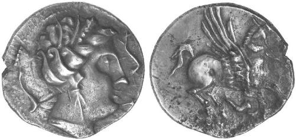
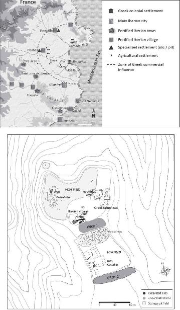
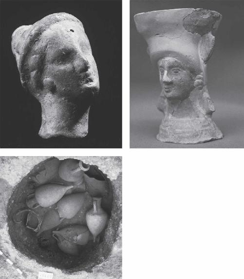
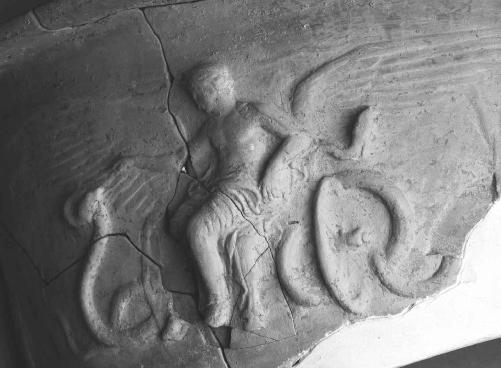
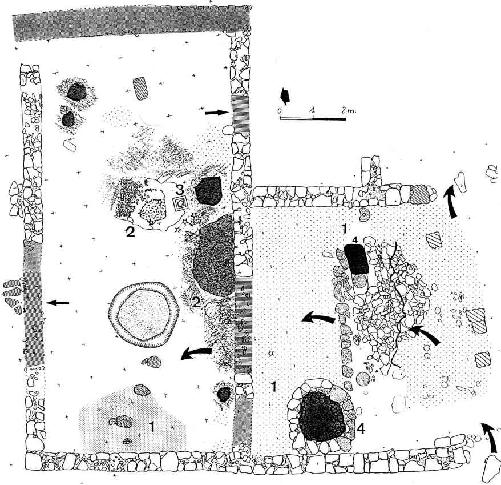
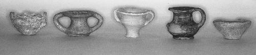
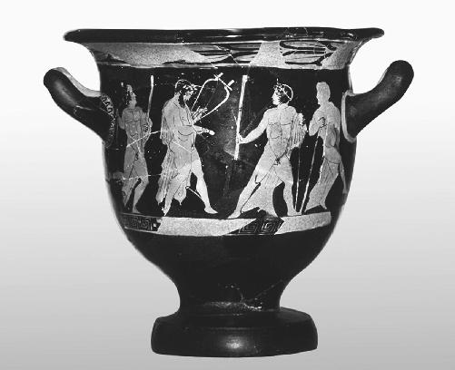
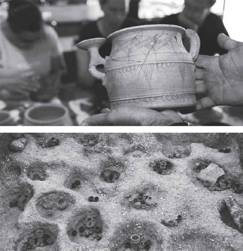
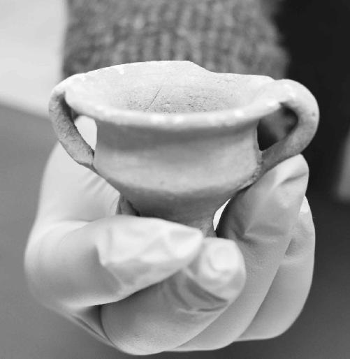

As I approach the Benedictine Abbey of Sant Pere de Galligants, I pause to enjoy the February sun breaching the cypress trees and reflecting off the bright limestone ashlars of the rectangular façade. Under a grand rosette the church’s main entrance features five archivolts that recess into the medieval darkness. Where they meet spiraling columns a few feet overhead, stone gargoyles beckon me into the chilly, damp interior. Here in Girona, an hour and a half up the Spanish coast from Barcelona, construction of this Romanesque building began in 1131.1 The local branch of the Archaeological Museum of Catalonia chose this picturesque landmark as its home in 1857. I would later learn that a scene from Game of Thrones was shot here, which makes sense in retrospect.2 The whole monastery looks like something out of a fable—the perfect venue to come face-to-face with some very old secrets.
It is excruciatingly difficult to track down hard, undisputed evidence of hallucinogenic beer in the Mediterranean during the life of the Mysteries (ca. 1500 BC to AD 392). But after years of searching, and months of poring over a neglected monograph in the world’s largest library back home in Washington, D.C., I’m finally closing in on the mother lode.
Ever since my meeting with Martin Zarnkow in Germany, I’ve been emailing with Dr. Enriqueta Pons, the former head of this museum and longtime director of excavations at an archaeological site thirty minutes to the north called Mas Castellar de Pontós. From 450 to 400 BC, Greek colonists built the oldest structures on the ancient complex that rises above the Empordá Plain on a grassy plateau, seventeen kilometers from the coast of modern-day Empúries. The Ancient Greeks called it Emporion, founded in 575 BC by pioneers from the Anatolian port city of Phocaea in Ionia, the western coast of modern-day Turkey. Experts in long-distance trade, these same Phocaeans—the so-called “Vikings of Antiquity”—first established Massalia (now Marseille in France) around 600 BC.3 And after Emporion, they would move on to Elea (now Velia in southern Italy) around 530 BC.
The Greek Vikings appear to have gotten along well with the indigenous Iberian community, the Indigetes, who liked the exotic goods that their new, seafaring friends brought from the east. For their part the Phocaeans won another, important foothold in the ever-growing network of colonies here in the western Mediterranean.4 They were an intensely spiritual people. Not surprisingly, religion shows up in Emporion from the very beginning.
In antiquity the city was known for its temple dedicated to Artemis of Ephesus, which has yet to be excavated. A cult statue of Asclepius, the Greek god of healing and drugs, has survived from his ancient sanctuary. The Pentelic and Parian marble, which could only have been imported from the Greek homeland, stands proudly in the Archaeological Museum of Empúries. Several drachma, or Greek coins, have been recovered from the area as well. From the third century BC, they show the head of Persephone. In 2008 a ceramic kernos was unearthed during ongoing excavations. It is a colonial variation of the very same vessels that were used to mix the kukeon, now on display in the Archaeological Museum of Eleusis. The Empúries kernos has three cups topping a circular base and dates back to the fifth century BC. The curators believe the discovery of many such vessels in this region of Spain is intriguing evidence of an ancient mystery cult linked to Demeter and Persephone.5

A drachma found in the Greek colony of Emporion, dating to the third century BC. Surrounded by dolphins, the head of Persephone (left) and a Pegasus (right), emblematic of ecstatic flight. The symbols held sacred meaning for the seafaring Phocaeans, the Vikings of Antiquity from Anatolia, and their main trading partners in Carthage in North Africa. Anna Hervera. Courtesy of Soler y Llach SL

Map of Greek influence in Catalonia, radiating from the main Ancient Greek colonies of Emporion and Rhodes in northeastern Spain (above). Site plan of the archaeological works at Mas Castellar de Pontós (below). Courtesy of Enriqueta Pons
At some point, elements of this Phocaean religion traveled inland to Mas Castellar de Pontós, where echoes of the Eleusinian Mysteries intensify. Following the original Greek settlement in the fifth century BC, the indigenous Iberians added a fortified outpost in the early fourth century. Thereafter, what Pons calls a “Hellenistic farmstead” dominated the site under heavy Greek influence, flourishing from about 250 to 180 BC, when it was likely destroyed by the Romans. The three phases of occupation—Greek colonists, Iberian villagers, and Hellenistic farmers—are clear from Pons’s systematic excavations that began in 1990.6
Over the past thirty years she has unearthed a number of subterranean grain silos framing a “densely urbanized” housing complex that sits at the top of a large, open field surrounded by woods. Though much of the six-acre site remains unexplored, Pons’s surveys indicate as many as twenty-five hundred silos still underground. She concludes “the settlement acted as a place for the concentration, distribution, and trading of agricultural surpluses.”7 Like the bustling import-export business over at Emporion, or the massive grain silo that Kalliope Papangeli showed me on the archaeological site of Eleusis fifteen hundred miles to the east, Mas Castellar de Pontós made a fitting home for the Lady of the Grain and her daughter, the Queen of the Dead.
As a matter of fact, the links between the Greek farm and Eleusis are hard to avoid. In one of the excavated silos, numbered 101, Pons discovered the disembodied terra-cotta head of a female deity.8 The face is cocked slightly to the right, her hair pulled back in a bun. Deposited with her was an unguentarium, or oil container, which is elsewhere associated with graveyards. The vestiges of a firepit were identified, with three different types of wood: silver fir, oak, and Scotch pine. Each of the species grows in the mountains, some distance from the archaeological site. Mixed in with the trees were the remains of olive, millet, and barley. Together with the ritual items, Pons found a treasure trove of artifacts, all dating to the third century BC, including nine Greco-Italic amphoras. The terra-cotta goddess and oil container appear to have been intentionally buried in the silo as an offering to the underworld, leading Pons to identify the head as Demeter or Persephone (sometimes called Kore). The archaeologist says the cave-like silo, once used to stockpile grain, had been converted into a sacred subterranean chamber. It is strangely reminiscent of the hollowed-out rock shelter below the Greek Orthodox Church overlooking the ruins of Eleusis, where Persephone was said to emerge from Hades during the reenactment of the Mysteries.

Terra-cotta head of Demeter or Persephone (top left); field photo of nine Greco-Italic amphoras (bottom left); and ceramic incense burner (thymiateria) of a Greek goddess (top right). Courtesy of M. Solé. All were excavated from the archaeological site at Mas Castellar de Pontós, and all date to the third century BC. Courtesy of Enriqueta Pons and Museu de Arqueologia de Catalunya-Girona
Two related finds only further confirm the connection to Eleusis. In another silo, numbered 28, five ceramic thymiateria, or incense burners, were unearthed in 1979. One of them has been perfectly restored, showing the bust of a female deity. Dated to the third century BC, the artifact shows a woman’s face centered between fins on either side of the vessel, the top of which is a shallow basket for capturing incense.9 Pons identifies the goddess as Demeter, though Persephone cannot be ruled out. In addition, some relationship between Mas Castellar de Pontós and the Mysteries seems all but certain from the discovery of a kalathos, or Greek storage vessel, at the nearby site of Sant Julià de Ramis, just north of Girona. Dating from 225 to 175 BC, the ceramic is cracked and damaged, but the iconographic relief projecting from its surface is well preserved. Under a handle on the right, a woman’s head emerges from the side of the vessel. She too is likened to Demeter or Persephone, mainly because of the figure who straddles a flying dragon cart to her left.
It’s the same Triptolemus on the same winged, snake-drawn chariot that I saw during my visit to the Archaeological Museum of Eleusis. No different from the Triptolemus pictured on the British Museum skyphos from Capua, Italy. What is he doing here in Spain?

Ceramic storage vessel (kalathos) showing the divine missionary of the Mysteries, Triptolemus, riding his winged chariot of flying serpents. Compare with the marble relief of Triptolemus from Eleusis (here) and the red-figure skyphos of Triptolemus from Capua, Italy (here). Courtesy of Museu de Arqueologia de Catalunya-Girona
Images of Demeter’s royal missionary are, of course, common in Greece. And relics of Greek mystery cults in that part of southern Italy known as Magna Graecia (Great Greece) are not unusual at all. Ever since the eighth century BC, the region was the main target of Ancient Greek colonization.10 But Spain? That’s another thing altogether. If Kalliope Papangeli hung this Iberian Triptolemus next to her Greek Triptolemus in Eleusis, no one would believe it came from a world away. How did the vessel end up here, on the secluded shores of the Greek-speaking world? Does it mean the Mysteries, or some local interpretation thereof, were really celebrated this far from Eleusis?
It’s a question most classicists aren’t even trained to ask. Aside from Magna Graecia, the Ancient Greek frontier settlements are woefully neglected in the traditional curriculum. I never even heard of Emporion or Mas Castellar de Pontós until I picked up the hunt for Greek-inspired graveyard beers around the Mediterranean. Why look beyond Greece when you could spend a lifetime reading the overwhelming amount of literature produced during the Golden Age of Athens? Understandably, that’s where the focus of education and scholarship lands. But it comes at a terrible cost. For a secret as intractable as Eleusis, we need to think outside the box and explore every nook and cranny of the ancient world. Fortunately a handful of classicists are at least open to the possibility that southern Italy wasn’t the only rich environment for potential initiates of the Mysteries.
Though she doesn’t write about Mas Castellar de Pontós in any detail, Dr. Denise Demetriou at the University of California, San Diego, does describe Emporion as both a “major economic center” and a “multiethnic environment,” whose “very existence stimulated cross-cultural interactions with the indigenous populations.”11 As with other axes of trade and commercial activity across the former Greek-speaking Mediterranean, a “peculiar mixture” of religious influences in Catalonia was only natural. Far from Athens, it would make the ideal home for experimentation and, just maybe, the revelation of the kukeon’s psychedelic recipe that the officials in Eleusis tried so hard to protect. According to Demetriou, religion in a cosmopolitan capital like Emporion was “more flexible” than back home in Greece, which meant the “usual exclusivity of cult” wasn’t always so strictly enforced. She points to Delphi and Olympia as examples of “open-access sanctuaries,” where visits by the inexperienced would be facilitated by special liaisons.12
If Mas Castellar de Pontós was an open-access sanctuary, then the Mysteries of Eleusis would have been the most logical rites over which the Greeks and the locals would have found common ground. According to classicist François de Polignac, underworld cults like Demeter’s, with her “agrarian or even funerary connotations,” had a universal quality. Like the prehistoric skull cult from Anatolia, the Mysteries promised “a temporary return to a more primitive life and a period before the establishment of the city.” For their part, the mother-daughter duo of Demeter and Persephone offered “a familiar face” to the locals who might have known them by another name.13 In order to initiate the homesick Greeks or the curious Catalonians into the secrets of Eleusis, however, a dedicated sanctuary would have been integral to the ritual experience.

Detail of the domestic chapel (Room 3) and adjoining rooms at Mas Castellar de Pontós. 1. Areas for domestic activity, including grain processing and beer brewing. 2. Areas for ritual activity. 3. Location of the altar of Pentelic marble. 4. Homemade oven. Courtesy of Enriqueta Pons

Five miniature vessels unearthed at Mas Castellar de Pontós. Courtesy of Enriqueta Pons and Museu de Arqueologia de Catalunya-Girona
As it turns out, that’s exactly what Dr. Enriqueta Pons uncovered.
By 1997 she had already made excellent progress on the residential area of the Greek farm. A main street cuts down the middle, separating two living quarters on either side. One of the larger units measures almost 250 square feet and is described by Pons as a “domestic chapel” for an “agrarian cult.” Located in a private home, the chamber was managed by women and equipped for domestic activities. But it was also designed to become the scene of initiation rituals, where Demeter or Persephone might appear to the devotees, along with their departed ancestors. The archaeologist calls it a “shared space” for the human to come into contact with the divine, or the dead to speak to the living. The methods by which this lost mystery cult would communicate with the underworld can be fairly well reconstructed from the material finds.
In the very center of the room Pons discovered a large, rectangular hearth. She uses the Greek word eschara (ἐσχάρα). The burnt bones of three female dogs were found in a circular clay-coated ditch, over six feet in diameter. Pieces of an elegantly carved column of Pentelic marble, complete with an Ionic capital, were reassembled to form a two-foot altar. On top, a rectangular cavity, charred by flames, showed signs of knife and axe cuttings—evidence of “bloody sacrifice.” Like the statue of Asclepius in Empúries, the expensive marble was proven by petrographic analysis to have originated at the Mount Pentelicus quarry outside Athens.14 Interestingly, ten miniature chalices were scattered all over the chapel and adjoining rooms.15 And two mills were unearthed along with crockery, not only for the grinding and cooking of grain, but also for the brewing of a very special beer.
All together, Pons interprets the “domestic chapel” as a holy place where dog sacrifice was combined with ceremonial purifications and ritual drinking. Elsewhere in Bronze Age Iberia, the archaeologist notes that “dogs were often buried in graves as part of the grave goods.”16 In Ancient Greece, dogs were also associated with the afterlife, where they marked the three distinct phases of the immortal journey: “the passage from life to death,” “the time spent in the Underworld,” and “the return to life as a spirit.”17 The most famous hellhound was Cerberus, the three-headed dog who belonged to Hecate.18 As the mother of Circe and patron goddess of witchcraft, Hecate had a number of canine epithets: the “dog consumer” (kunosphages/κυνοσφαγής), the “dog leader” (kunegetis/κυνηγέτης), the “dog lover” (philoskulax/φιλοσκύλαξ), and the “black bitch” (kuon melaina/κύων μέλαινα). Canine sacrifices in her honor were common in Ancient Greece.19 But Hecate also had a profound relationship to the Mysteries. In the Hymn to Demeter, Hecate, with her “blazing torches,” is the only goddess who aids Demeter on the desperate search for her missing daughter. And she alone can accompany Persephone through the land of the dead.20
Trying to figure out what it all meant, Pons continued her rigorous work on the peculiar “domestic chapel” for years. She is a native Catalan speaker, so most of her finds are first published in the language that is a source of great pride among the fiercely autonomous Catalonians. The people who gave the world Antoni Gaudí and Salvador Dalí unilaterally declared their independence from Spain in a 2017 referendum that landed a dozen Catalonian political leaders in jail. As their public trial gets under way during my visit, protests and demonstrations are erupting all over Spain.21 Throughout her career, Pons’s unwavering decision to write in Catalan has been a rebellious act that puts her scholarship at serious risk of being ignored by the global academic community, where the lingua franca in Classics, history, and archaeology is English, French, or German. Even among the Romance languages, Catalan is only the sixth most spoken, trailing behind Spanish, Portuguese, French, Italian, and Romanian.
In an effort to bring some attention to this Greek colony in the backcountry of Catalonia, Pons finally relented. In 2010 she published a brief article about the dog sacrifice in a French journal, followed in 2016 by a longer treatment in English, which became one chapter in a book organized by the State University of New York (SUNY). There the archaeologist details the results of excavations on additional underground silos. In one case (silo 137) “numerous drinking vessels” were unearthed, suggesting a “celebration consisting of a collective banquet.”22 It harkens back to Brian Hayden’s “feasting model” from the last chapter. Ever since the Stone Age, those who drink together, stick together. But there’s also a spiritual aspect here. Mixed in with the charred barley and animal remains was a spectacular bell-shaped krater, or vase, featuring a komos: the ritualistic nocturnal procession named after the son and cupbearer of Dionysus. More appropriate for an Athenian dining room than a subterranean chamber in ancient Catalonia, this krater shows the God of Ecstasy as the guest of honor at this drunken parade.

Bell-shaped krater excavated from silo 137 at Mas Castellar de Pontós, dating to the end of the fifth century BC. Four male figures are marching along in the mystical parade dedicated to Dionysus known as the komos. Several carry magical staffs and torches. A bearded man (second from left) with a garland of ivy is playing the lyre. Courtesy of Enriqueta Pons and Museu de Arqueologia de Catalunya-Girona
Looking back over the past thirty years of Pons’s excavations, the intersection of the Eleusinian Mysteries and Mas Castellar de Pontós is overpowering: the twenty-five hundred grain silos; the terra-cotta head and incense burner depicting Demeter/Persephone; the ceramic vessel of their chief missionary, Triptolemus; the drunken symposium on the Dionysian vase; abundant evidence of underworld offerings and dog sacrifice within the “domestic chapel” and subterranean pits, all closely related to the goddesses’ sidekick, Hecate. The entire Eleusinian cast of characters is in attendance. Strangely, I didn’t know about any of it when I reached out to Pons in November 2018. The only reason I contacted her in the first place was to make sure my Catalan wasn’t playing tricks on me. Did she really find archaeobotanical evidence of a psychedelic beer? And why did no one else who was supposed to know such things ever hear about it? Not Zarnkow or McGovern. Not Fritz Graf or any of the top-notch classicists I had been consulting for years. Not even Ruck.
Unlike her work on the canine ritual, Pons’s potential bombshell was never published in any of the mainstream academic journals for English, French, or German speakers. Many months before landing here in Catalonia, I came across her obscure discovery only by accident, in the course of my slow, tedious, and often discouraging hunt for hard data on hallucinogenic graveyard beers in the ancient Mediterranean. That research took years in itself, and always felt like a blind alley. But I pressed on. Because just when I was about to lose hope, the faintest pattern began to emerge. And for some inexplicable reason, all the clues kept leading in the same direction.
Spain.
There was the intriguing find at Eberdingen-Hochdorf, a Celtic settlement southeast of Stuttgart dating to the fifth and fourth centuries BC. From soil samples, the eminent archaeobotanist Hans-Peter Stika, of the University of Hohenheim, identified seeds of the vision-inducing henbane (Hyoscyamus niger), together with germinated hulled barley grains. It suggested a psychedelic brew, especially since the same henbane would later be used in the pre-Reformation hallucinogenic gruit ales in the same region of Germany. But the combination and consumption of the two ingredients, barley and henbane, could not necessarily be proven. Writing in 2010, Stika ultimately thought a henbane-infused beer was pure speculation.23 But it’s a reasonable avenue of pursuit.
Pliny credited the appearance of henbane to Hecate’s pet, Cerberus, from whose urine the plant first sprung from the earth. The Greek naturalist referred to the plant as “Herba Apollinaris” (herb of Apollo), claiming that the Pythia priestesses at Delphi inhaled the smoke of smoldering henbane seeds to produce their oracular visions. Another ancient term for the species, Pythonion, cements the connection.24 So add henbane to the barley meal and laurel leaves discussed earlier as one more psychedelic candidate for the magic at Delphi.
Henbane is a member of the Solanaceae family, which, in addition to the more familiar tomato, potato, and tobacco, also includes mandrake (Mandragora officinarum), deadly nightshade (Atropa belladonna), and black nightshade (Solanum nigrum). The so-called nightshades are among the most poisonous plants in Europe. Starting with Hecate and the Pythia in Ancient Greece, they became so synonymous with black magic in the Middle Ages and Renaissance that, even through the nineteenth century, the nightshades were still “easily anthropomorphized as witches and whores.”25 They were also regarded as the key psychedelic ingredients of the witches’ flying ointments that we will review in the next part of this investigation.
After the henbane lead, I came across three intriguing reports from Spain, all from the early 2000s, and all published in either Spanish or Catalan. First, a ritual pit at Prats in Andorra, the tiny country between France and Spain, turned up archaeochemical evidence of calcium oxalate, or beerstone, in several ceramic pots. In addition the researchers discovered an unidentifiable species of “mushroom wrapped in fern fronds” and eight seeds of jimson weed (Datura stramonium).26 Like its sister nightshades, jimson weed contains a number of visionary and potentially fatal tropane alkaloids: atropine, scopolamine, and hyoscyamine.27 An intriguing find, but the site dated far too early (1600 BC) for Greek colonization.28
The second report pushed the clock back even further. The alkaloid hyoscyamine and traces of barley beer were recovered from the undisturbed burial cave at Calvari d’Amposta in Tarragona, south of Barcelona. The hyoscyamine could have come from any of the sinister nightshades. Dating to 2340 BC, the remains were interpreted as “a hallucinogenic beer that was consumed during the mortuary ceremonies.”29
The third report was the most exciting. As part of a similar barley-based mixture, the same witchy hyoscyamine was again detected in a luxurious tomb at the Necropolis of Las Ruedas in north-central Spain, outside Valladolid. Unlike the others, these remains dated to the pre-Roman, Celtic population known as the Vacceans from the second century BC.30 The depth of contact between the Greek coastal colonies in Spain and the local tribe at the Pintia archaeological site, so far inland, is unknown. But for some reason the special brew was hiding out in yet another Iberian version of the Eleusinian kernos.31 It wasn’t the only kernos recovered from the site, but it was the only one that tested positive for the psychedelic graveyard beer. Just like the Empúries kernos unearthed in 2008, the vessels at Pintia instantly point to the Mysteries.32

The Necropolis of Las Ruedas at the Pintia archaeological site in north-central Spain. Some 300 graves have been identified thus far, dating from the fifth century BC to the second century AD. Dozens of sacred vessels placed in their tombs of origin during the 2009 excavations (below); a recently unearthed kernos (above), similar to the Greek chalice that tested positive for a psychedelic beer consumed during the Vaccean funerary rituals. Courtesy of Centro de Estudios Vacceos Federico Wattenberg, Universidad de Valladolid, Spain
Years of searching for an ancient specimen of hallucinogenic beer had finally paid off. When I pinpointed the evidence at the Necropolis of Las Ruedas, sporting an explicit Greek connection, I set my sights on Spain. With the archaeobotanical and archaeochemical data from Prats and Tarragona establishing a couple thousand years of extreme brewing in this part of the ancient world, my interest skyrocketed. The excavators of the Necropolis of Las Ruedas didn’t mince words in the 2003 publication of their organic residue analysis: the “psychotropic” beer was consumed by an “elite class of warriors” during a funeral feast, with the “clear intent” of propelling an otherworldly journey “to the Beyond.”33 The team interprets the specific tomb where the psychedelic kernos was used as the site of an Iberian devotio, a bizarre ritual whereby soldiers took their own lives in a mystical tradition that guaranteed “the divine protection of their chief or general.”34
Western Indo-Europeans with a death cult and psychedelic graveyard beer, contemporaneous with Eleusis. What an amazing confluence of ideas! It’s tempting to recognize a Stone Age precedent for the sacrament at the Necropolis of Las Ruedas. The trail could stretch, if not all the way back to the Raqefet Cave and Göbekli Tepe, then at least to the unknown botanical experts of prehistoric Anatolia. Perhaps the same ones who inspired the “Minoan ritual cocktail” that Patrick McGovern chemically confirmed at Grave Circle A in Mycenae, or the potion he resurrected from the Phrygian tomb at Gordium, by which the deceased king was “royally ushered into the afterlife” with a psychoactive Midas Touch. The Ancient Greeks weren’t the only Indo-Europeans who would have inherited the unique brew, after all. Any of the Indo-European Celts, such as the Vacceans, would have made equally good stewards of the tradition.35
Interestingly, recent DNA studies have proven that the Catalonians can trace their roots to “the arrival of Anatolian Neolithic–associated ancestry,” a “pioneer colonization” of farmers from the east who settled the peninsula as early as 5475 BC.36 Modern Spaniards derive about half of their genetics from these Stone Age agriculturists.37 Even more interesting, the oldest archaeobotanical and archaeochemical evidence of beer consumption in all of Europe was discovered in 2006 at the very same place this Anatolian signal appeared in the ancient Iberian DNA: the Neolithic burial cave of Can Sadurní, just southwest of Barcelona. Together with malted grain on a stone hammer and anvil, calcium oxalate was recovered from a jar on site that dated to about 3470 BC.38
The beer from Can Sadurní rivals some of the earliest beer finds in Ancient Egypt and Mesopotamia, the same period that coincides with the development of the written word around 3200 BC, when history as we know it begins. Did the Iberian beer come with those Anatolian farmers whose DNA is recorded in Western Europe two millennia earlier? If so, why wouldn’t their craft brew survive another few thousand years? Under Colin Renfrew’s Anatolian Hypothesis, the Vaccean Celts at the Necropolis of Las Ruedas could have inherited not only the language, but also the biotechnology and peculiar religion that the Proto-Indo-Europeans had perfected in their prehistoric homeland of Stone Age Turkey.39
When Triptolemus showed up on the shores of Catalonia after the founding of the Eleusinian Mysteries, he may have been surprised to learn that his services weren’t needed. The locals already knew how to brew beer and spike it with the kind of magical plants that might allow them to accompany their deceased loved ones to the Other Side, albeit temporarily. Aside from Magna Graecia, if ever there were a captive audience for the Mysteries on the European continent, it was in northeastern Spain. All the raw material was already there. Like long-lost cousins swapping recipes passed down by a common great-ancestor, the Indo-European Greek colonists from Phocaea who made landfall at Emporion in the sixth century BC—and infiltrated Catalonia for centuries—may have reintroduced the Indo-European Iberians to a very delicate technique. What Ruck calls the “Secret of Secrets” and what Martin Zarnkow refers to as the “controlled contamination” of a volatile fungal parasite that turns healthy grain into “mad grain” (Tollkorn in German) to produce LSD beer. A welcome addition to all the nightshade beers in the region. In the process, the reunited relatives appear to have constructed the Eleusis of the West for any locals who couldn’t afford the trip to Athens.
In all the relevant studies from the early 2000s, the name of one young archaeobotanist kept popping up: Jordi Juan-Tresserras from the University of Barcelona.40 In the summer of 2018, I started reading everything he ever wrote, and eventually came across a paper from 2000 in the peer-reviewed Spanish-language journal Complutum.41 It was a summary of his and other drug-related archaeological findings across Iberia. Stuffed into the middle of the nine-page article was a single paragraph about an apparently unremarkable discovery, “the remains of ergot sclerotia” at Mas Castellar de Pontós in not one, but two different artifacts connected to Pons’s iconic “domestic chapel.”
The fungus was found embedded between several teeth of a human jawbone. Microscopic evidence of the same organism was additionally identified in one of the miniature chalices that once contained a “special beer.” Given the “cultic” context of the area where both relics were unearthed in 1997, Juan-Tresserras linked whatever potion filled the tiny cup to “the consumption of the kykeon” during the Mysteries of Eleusis. After all, ergot played a “fundamental role” in the Ancient Greek rites according to Gordon Wasson. And no less a scientific expert than Albert Hofmann had explained how the “entheogenic alkaloids” in ergot, like the water-soluble ergine and ergonovine, could have easily been separated from the toxic alkaloids. In his bibliography Juan-Tresserras listed a Spanish version of The Road to Eleusis published in Mexico in 1980 that I didn’t even know existed.
Given all the leads for psychedelic graveyard beer emerging from ancient Iberia over the past twenty years, I wasn’t necessarily surprised. But the scientific identification of ergot was absolutely unique, and almost too good to be true. So I followed the trail of bread crumbs to the only published material that ever presented the full archaeological background of the Catalonian kukeon: a massive 635-page tome published in 2002 as a complete record of Enriqueta Pons’s tenacious work at Pontós from 1990 to 1998. To this day, the monograph has been published only in Catalan. I was able to find a copy at the Library of Congress, where I dove into one of Indo-European’s most distinctive tongues for days.
Next to the altar of Pentelic marble, amid the charred skeletons of sacrificed dogs, Pons’s team chanced upon the lower-right jawbone of an adult male between the ages of twenty and twenty-five. Four teeth were intact, three were missing. They dated from between 200 and 175 BC. Juan-Tresserras analyzed two samples of tartar for any microscopic vegetal remains. Together with minerals like quartz and basalt, the silica phytoliths, calcium oxalate crystals, starch grains, and microcarbons all indicated a cereal-based diet.42
But more intriguing for the archaeobotanist was the presence in both samples of ergot (Claviceps spp.), which is sègol banyut in Catalan. How to explain this out-of-place jawbone in a ceremonial chamber that Juan-Tresserras calls “a sanctuary dedicated to Demeter and Kore-Persephone”?43 That the ergot was ingested seems clear, leading the scientist to only two possible interpretations: accidental or intentional consumption. The former would have occurred in the wake of an infected harvest, just as in the frequent bouts of ergotism or St. Anthony’s Fire throughout the Middle Ages. The latter would, of course, make sense as part of “a ritual associated with entheogenic drinks like the kykeon.”44
Interestingly, Juan-Tresserras did not detect any ergot in the two mills where Pons believes the grain was prepared and the beer was brewed. So there doesn’t appear to have been an accidental ergot outbreak. The intentional consumption hypothesis gains traction from the very existence of the jawbone in a “sacred enclosure,” where no other human remains were recovered. Whenever a skull shows up, some very ancient religion is at play. Over a couple of dense pages in the Catalan monograph, Juan-Tresserras charts the various death cults that have been archaeologically catalogued across the Celtic strongholds of the British Isles, Belgium, France, and Spain—where de-fleshing of corpses, ritual decapitation, and decorative skulls are all attested.45 He entertains the possibility that the jawbone from the “domestic chapel” belonged to an “exceptional person,” an “initiate,” whose skull had some special significance to the members of the cult. Likewise Pons believes the jawbone was used in rituals for making contact with dead ancestors. Whatever took place in the sanctuary, she discerns a mix of Greek, Celtic, and indigenous Iberian influences.46
As a meeting place for distant Indo-European cousins, could Mas Castellar de Pontós be evidence of the same skull cult discovered at Göbekli Tepe? The German Archaeological Institute believes the crania at “the world’s first temple” were deliberately manipulated for ritual display. Dated some eight to nine thousand years before Pons’s excavations in Catalonia, the prehistoric skulls are thought to represent a primitive version of ancestor veneration and “the interaction of the living with the dead.”47 Exactly what Pons sees in Iberia. Under Colin Renfrew’s Anatolian Hypothesis, did elements of the Stone Age religion really survive for thousands of years by means of a missing Proto-Indo-European language, only to wind up on the other side of the European continent? And is the graveyard beer the elusive cipher that finally unlocks the deepest mysteries and real purpose of ancient sites as diverse as Göbekli Tepe, Eleusis, and Mas Castellar de Pontós?
It all comes down to that miniature chalice and its “special beer.” Under the radar of all the professional academics who basically ignore anything published in Catalan, Juan-Tresserras was able to dissect an archaeobotanical clue that just may vindicate a scorned hypothesis from 1978 about the original contents of the Ancient Greek kukeon and the best-kept secret in the history of Western civilization. Martin Zarnkow’s intuition that prehistoric brewers could have created an ergot-infused beer for special occasions seemed well supported. Informed speculation, but speculation nonetheless. When I finally read Juan-Tresserras’s analysis of the ancient contents of the tiny cup unearthed near the jawbone, however, everything changed. On the gilded dome of the main reading room in the Library of Congress, the lantern’s female figure—a symbol of Human Understanding—is depicted lifting the veil of ignorance from her face. I could feel her glaring down at me, as the first hard evidence for the hypothesis that tanked Ruck’s career hit me right in the chest.
At the tail end of his Ph.D. studies, Juan-Tresserras had access to one of the most equipped research and development laboratories in Europe at the University of Barcelona. Now called the Science and Technology Centers (Centros Científicos y Tecnológicos or CCiTUB), the facilities, spread across four campuses, specialize in chemistry, material science, and biosciences. They just celebrated their thirtieth anniversary in 2018. Using both optical microscopy and a scanning electron microscope, the archaeobotanist unveils the results of his 1997 study in poetic Catalan:
Residues associated with a type of beer have been detected in good amounts: remains of gelatinized starches, starches with signs of enzymatic attack, yeasts, frustules of diatoms—something rather strange in such a small vessel. This find can be interpreted as either an offering of beer sediment or as the residue of a product that was used and/or consumed.… Regardless, the element to highlight is the presence of the remains of ergot sclerotia (Claviceps sp.), also identified in one of the human jawbones.… This purple-colored mushroom has been associated with Demeter as well, especially because the color is associated with the goddess, and also because this fungus undergoes a cycle similar to the myth of Demeter and Persephone. After infecting the grain plant with ascospores, the purple-colored sclerotia that envelop the ears of the mature grain begin forming. At first, the sclerotia fall to the ground, where they pass the winter and fruit with the first spring rains, forming little purple-colored mushrooms that release ascospores that, using the wind to intercede, wind up infecting the ears. The harvest of the ears infected with sclerotia and their later processing contaminate the grain with toxic alkaloids. The psychoactive alkaloids of ergot are basically derivatives of lysergic acid and have hallucinogenic effects.48
I immediately reached out to both Enriqueta Pons and Jordi Juan-Tresserras. Both were equally taken aback by my interest in a twenty-year-old discovery that had received only passing reference during a bygone moment of their careers. Right where she started in 1990, Pons was still leading the excavations at Mas Castellar de Pontós. And she welcomed my visit to the Benedictine Abbey of Sant Pere de Galligants. I had to see the miniature chalice and other artifacts for myself. But there was really only one person in the world who deserved a blind date with his potential smoking gun. So I called up a crazy old professor at Boston University and asked him to join me on a road trip.
I step under the gargoyles to greet the squat, white-haired Pons and the current director of Girona’s archaeological museum, Ramon Buxó. We communicate in Spanish, though I can hear the Catalan accent behind most syllables. A few minutes later Ruck approaches the entrance with his longtime collaborator, Mark Hoffman, who has just escorted the eighty-three-year-old classicist from the only parking spot we could find, a good mile from the cramped streets surrounding the medieval monastery. I introduce Ruck to the humble excavator who unearthed the twenty-year-old evidence to support a forty-year-old theory in the last place anyone expected to find it. The now-aged scholar and Pons exchange a warm hug. At six foot three, Ruck towers over the archaeologist.
The five of us exit the soaring nave of the Romanesque basilica and head for the rectangular cloister on the right. We ascend into the second story above the sacristy, where the archaeological museum is housed, and set up camp in a windowless conference room. There on an unassuming desk with a navy tablecloth, waiting for our visit, are the goddesses: the incense burner and the disembodied terra-cotta head with the upswept hair—both rescued from the underworld grain silos and both identified as Demeter/Persephone. Beside them, a miniature chalice only a couple inches high, with a handle sticking out of either side. The Greeks would call it a kantharos, the ritual cup carried by Dionysus to induce his ecstasy.
Pons clutters the table with three decades’ worth of data on the Greek farm twenty miles to our north. In page after page of carefully prepared color printouts, she walks me, Ruck, and Mark through every conceivable aspect of the site’s topography: schematics, field surveys, aerial photographs. She even slips me a USB drive with drone footage for later viewing. The excavator points out the hundreds of subterranean silos to the west of the residential area on the high plateau. And then she takes us on a virtual tour of the “domestic chapel,” explaining exactly where the miniature chalice and jawbone were uncovered, and where the grain was brewed for the sacrament of beer. She kindly gives me a copy of the 635-page monograph I’ll no longer have to storm the Library of Congress to consult. Within a half hour, my brain is about to explode from the nonstop, real-time translation to keep Ruck up to speed.
Buxó snaps on a pair of blue latex gloves and delicately places the tiny vessel in the palm of his hand. He offers it for Ruck’s inspection the way a sommelier would present the cellar’s most expensive vintage. As far as the archaeological fieldwork and scientific analysis conducted thus far is concerned, Ruck is staring at the ancient container for a psychedelic graveyard beer that was brewed in the early second century BC by displaced Greek witches or their pupils. Initiates of the Mysteries of Eleusis? Perhaps. Magicians, healers, and prophets with a noble Greek pedigree? As we’re about to find out, absolutely.

The Director of the Archaeological Museum of Girona, Ramón Buxó, revealing the miniature Greek vessel (kantharos) unearthed at Mas Castellar de Pontós for inspection by Carl Ruck. Under Jordi Juan- Tresserras’s optical microscopy and scanning electron microscope, this vessel tested positive for traces of ergotized beer in 1997. Courtesy of Ramón Buxó and Museu de Arqueologia de Catalunya-Girona
Ruck is withdrawn. I want to know what he thinks of the solitary cup he traveled an ocean and four decades to see. But I decide to let him process for a few minutes.
We stretch our legs and amble into the museum proper to examine the altar of Pentelic marble, quarried outside Athens and shipped all the way here to prepare Hecate’s canine victims. To its left, in a display case dedicated to religion, I see the one artifact more than any other that screams the Mysteries: Triptolemus. As I study the artifact, I recall Dr. Denise Demetriou’s insight that commercial centers like Emporion or Mas Castellar de Pontós could very well have served as open-access sanctuaries, promising a rare glimpse of the Eleusinian secrets in the Ancient Greek hinterland. If Demeter’s missionary was here, it almost certainly means the kukeon came with him.
From the archaeobotanical and archaeochemical data in Prats, Tarragona, and the Necropolis of Las Ruedas, the ancient Iberians seem to have preferred the hallucinogenic nightshades to commune with the Lady of the Grain and their departed ancestors. In that case, was a Greek hand to blame for the presence of ergot in that tiny Greek vessel unearthed on the Greek farm? Did Pons and Juan-Tresserras stumble upon hard evidence of the elusive ingredient that the initiates of the Mysteries were forbidden from talking about under penalty of death for close to two millennia? In the absence of any analysis of the many vessels recovered from Eleusis itself, is this how history’s longest game of hide-and-seek comes to a close?
I turn to the crazy old professor and usher him back into the windowless conference room for some alone time with the miniature chalice. We’ve all peppered Pons with questions over the past hour, so Ruck’s reaction is long overdue. I hand him my copy of The Road to Eleusis and dive in. “Okay, Professor. What do you make of all this?”
The gears had been spinning in Ruck’s head since the moment we set foot inside the dank monastery. His answer came out in a long run-on sentence, as if it were 1978, and the still-respected professor were back at his home office in Hull, Massachusetts, typing up a finishing thought for the prize manuscript that would rewrite history.
“Well, the most important part is where it was found,” begins Ruck in that New England baritone, peering down into the chalice. “It was a sacred place for ritual. The shape of the vessel is only used for the shape of the cup drunk by the god Dionysus himself. And considering where they were found”— he refers to the other chalices scattered around the domestic chapel —“they’re not toys. They are drinking vessels. And the minuscule size of the vessels would indicate that what was drunk was a very powerful potion of some kind. The size makes it clear: a tablespoon was all you needed. This was not a dinner party of wine and hors d’oeuvres. And considering the fact that residue of ergot was found, it would seem to substantiate the idea that some kind of visionary ceremony for the Grain Goddess or Persephone was being celebrated in a household shrine.”
“If this all shakes out, how do we face the fact that some Greek colonists in an important cult center of the ancient world, contemporaneous with the classical Mysteries, were using drugs to find God?”
“We should have no trouble with that,” Ruck responds. “It’s time that we acknowledge our heritage.”
And that was it. No malice or hard feelings. Just a slight tweak to the theory that Walter Burkert proposed a year before The Road to Eleusis scandalized the most senior discipline in the academy. The same theory echoed by Fritz Graf and Kalliope Papangeli in recent months as a drug-free Eleusis. In 1977, when Burkert speculated about “prehistoric drug rituals” at the basis of the Mysteries, he wasn’t stepping out on a limb. If the Neolithic Revolution really was the Beer Revolution, then humanity’s oldest biotechnology could have existed almost ten thousand years before the Greek Mysteries. Exactly when, we still don’t know, but the initial findings from the Raqefet Cave and Göbekli Tepe keep pushing the dates closer and closer to the last Ice Age. It’s the kind of antiquity that was unthinkable to Burkert’s generation. Even without the benefit of today’s archaeobotany and archaeochemistry, however, the esteemed German was still willing to attribute advanced botanical expertise to the archaic ancestors of the Greeks, whoever they turned out to be, and whenever their creative recipes transformed ordinary brewing into a psychedelic event.
By definition, the spread of agriculture had to involve a profound relationship with the natural world. But familiarity with the flora that alter human consciousness was all but assured much earlier in the protracted history of our species, which is at least three hundred thousand years old and counting.49 “This is not necessarily surprising,” says archaeologist Scott M. Fitzpatrick, “given that we have been hunters and gatherers for 99 percent of human history and would have come into contact with, consumed, and experimented with a wide array of plants.”50 But we weren’t the first on the scene.
We now know for a fact that mastery over the Paleolithic pharmacopeia transcended even our species. Our closest extinct relatives, the Neanderthals, lived from about 430,000 to 40,000 years ago. In 2012 the teeth of five such individuals, discovered at El Sidrón Cave in northwest Spain, were subjected to sequential thermal desorption-gas chromatography-mass spectrometry (TD-GC-MS) and pyrolysis-gas chromatography-mass spectrometry (Py-GC-MS). The teeth provided molecular data for cooking and smoke inhalation over a wood-burning fire, as well as “the first evidence for the use of medicinal plants by a Neanderthal.” The chemical signatures of yarrow and chamomile were dated to a stunning fifty thousand years ago.51
This new dental calculus evidence tends to support earlier suppositions about the use of medicinal, or at least hygienic, if not spiritually motivated, psychoactive plants by Neanderthals well back into the Pleistocene [2.58 million years ago to 9,700 BC].… “It is extremely likely that, as practicing naturalists (and early-day ecologists?), the Neanderthals must have known and appreciated all of their environment, since their very existence depended on it” … and as such, positive and negative “experiences with various plants would have been passed down as part of Neanderthal ecological knowledge.” 52
According to Burkert, the expertise transferred for tens of thousands of years from Neanderthal to Neanderthal, and Stone Age homo sapiens to Stone Age homo sapiens, somehow came to a dead stop at the temple of Demeter. Without ever explaining how, the German scholar suggested that by the time these primitive rites arrived in Eleusis, the drugs had somehow vanished from the “festival of immortality” that “seemed to guarantee some psychedelic Beyond.” That “expansion of consciousness”—a decadent escape from reality—was simply an embarrassing episode from the pre-Hellenic past. As John Silber would tell Ruck in 1978, “The Greeks just wouldn’t have done that sort of thing.”
The hard data of hallucinogenic beer at Mas Castellar de Pontós says otherwise. Rather than being replaced by one of Burkert’s “harmless substances,” the original, Stone Age sacrament seems to have survived well into the historical period within certain Indo-European traditions. Not just the eastern branch, among the exotic Indians with their psychedelic soma. Not just the western branch, among the bloodthirsty Vaccean Celts with their graveyard beer at the Necropolis of Las Ruedas. But among bona fide Greeks who hailed from Phocaea as the Vikings of Antiquity with a well-defined lineage.
Some scholars may come along and object that the ergot-infused beer at Pons’s Greek farm has nothing to do with Greece. Like Prats, Tarragona, and the Necropolis of Las Ruedas, it’s just another example of Celtic and Iberian extravagance—hardly emblematic of the architects of Western civilization. The Greeks had gotten mixed up with the wrong crowd. But on top of the archaeological finds that show Mas Castellar de Pontós to be immersed in an undeniably Greek context, it would be wise to recall the spiritual sophistication of the colonists who founded Emporion in the first place.
They were far from merchants or traders in the ordinary sense. The Phocaeans embossed Persephone on their coins for a reason. They spent many centuries seeding Catalonia with very Greek ideas about her underworld and, much more important, how to access it. But Spain wasn’t their only offshore venture. At the beginning of this chapter, Massalia was flagged as the Phocaeans’ first colony around 600 BC. Emporion soon followed, around 575 BC. Before their home on the Anatolian coast was taken over by the invading Persians, Herodotus says the Phocaeans packed up “all the votive offerings from the temples” and set sail.53 Their final headquarters would eventually take root in the heart of Magna Graecia. The now-defunct settlement of Velia, Italy, dates to 530 BC.
There the Phocaeans would give birth to a philosopher. But not just any philosopher. He was a magician, a healer, and a prophet. According to the scholar Peter Kingsley, one of the few classicists worth reading aside from Ruck, the Greek genius known as Parmenides “was among the first generation of children brought up by Phocaean parents in Velia, with the memories of Phocaea and of the journey from Phocaea still running fresh in their blood.”54 Why does that matter? Because the region known as Ionia, where Phocaea was located, left an indelible mark on the modern world: what astrophysicist Carl Sagan once described as the “glorious awakening” into the laws of nature that happened between 600 and 400 BC in “the remote islands and inlets of the Eastern Mediterranean.”55 Thales, Anaximander, Theodorus of Samos: “the earliest pioneers of science” were all the children of merchants. “The enduring legacy of the Ionians are the tools and techniques they developed,” said Sagan, “which remain the basis of modern technology.”
But the legacy of the so-called pre-Socratics didn’t stop there. Perhaps no single individual has done more for Greek branding over the past twenty-five hundred years than Parmenides. Plato claimed the wizard from Velia as his personal guru. For Kingsley there is no such thing as hyperbole when it comes to Parmenides:
And there’s no coming to grips with the history of philosophy or wisdom in the West without understanding him. He lies at the central nerve of our culture. Touch him, and indirectly you’re in touch with everything else. He’s said to have created the idea of metaphysics. It’s said that he invented logic: the basis of our reasoning, the foundation of every single discipline that has come into existence in the West. His influence on Plato was immense. There’s a well-known saying that the whole history of western philosophy is just a series of footnotes to Plato. With the same justification Plato’s philosophy in its developed form could be called a series of footnotes to that man.56
Without Parmenides, there is no Socrates, Plato, or Aristotle. But like the first scientists from Ionia and the founders of Emporion, the man born to Phocaean parents in southern Italy didn’t come from Athens. That’s simply not how Greece came to inflame the imagination of Western civilization. Maybe that’s what Ruck means when he says it’s high time to “acknowledge our heritage.” The same people who invented science also invented techniques for entering the underworld and communing with the immortals, whether gods, goddesses, or ancestors. Techniques, that is, for becoming immortals themselves.
The great religions of antiquity all converged in Ionia, where the Phocaeans were the beneficiaries of humanity’s collective wisdom. They sat right on the end of the so-called Royal Road that led through Anatolia and Syria into the Persian Gulf—the “caravan route” that Kingsley calls “a key point in the contact between ancient East and West.”57 The Phocaeans were on the doorstep of history. They absorbed ideas from both of the proposed Indo-European homelands—the scions of the Neolithic agriculturists, as well as the nomadic, Central Asian shamans. They had regular contact with the high cultures of Egypt, Babylonia, Persia, and India. In the roiling Ionian marketplace of ideas, the Phocaeans seem to have perfected one essential trick for cheating the afterlife. A trick they tried to carry to the rest of the world, breaching the Strait of Gibraltar, according to legend. “It was colonists from Phocaea,” writes Kingsley, “who sailed down the west coast of Africa, and then up to France and England, to Scotland and beyond.” But as far as we know, only three Mediterranean colonies were lucky enough to receive the trick: Massalia, Emporion, and Velia.
At the conclusion of this investigation, we will return to the Velians. In a strange twist to an already strange story, the Phocaean community in Magna Graecia survived intact for hundreds of years after Parmenides. When the earliest Christians began celebrating their Eucharist up the coast in Rome, the Velians would insinuate themselves into the very foundations of the latest mystery religion. Where the precious secret of how to die before you die was practiced by the first generations of Christians, the so-called paleo-Christians, and later suppressed by the growing bureaucracy of a faith that chose to deny its Greek heritage.
Ruck knows that, of course. Raised Catholic, he has been researching the origins of Christianity his entire career and writing about it since the early 2000s. The evidence at Emporion doesn’t just implicate the Ancient Greeks. It implicates their Phocaean sister city in Velia. And by a documented line of succession that we will explore, it implicates Rome. For the devotees of Jesus and the Catholic Church especially, the notion that their religion was midwifed by Greek-speaking Italian mystics with a spiked Eucharist could prove a very hard pill to swallow. But Ruck has been down this road before. So even if it takes a little while for the evidence to come to light, the old professor is confidant that a new generation of archaeochemists will be able to scientifically confirm the true nature of the original Eucharist in the years to come. And in the process, explain why the paleo-Christians in southern Italy and other Greek-speaking pockets of the ancient Mediterranean would have embraced the religion of Jesus. Not as something unfamiliar or unique, but a convenient take on the same Mysteries that had coaxed their Greek ancestors to Eleusis for two thousand years. And the same Mysteries that had inspired their Greek cousins at Mas Castellar de Pontós to create their very own house temple with their very own home brew. More than two hundred years before Jesus and his Last Supper brought the Mysteries into the dining room, the Greeks in Iberia beat him to the punch. They and their fellow witches in southern Italy were paving the way for the world’s biggest religion to find easy converts in every kitchen across the Roman Empire.
In 1978, a lone classicist at Boston University tried to tell the world about this whole “perverse” idea. But the world wasn’t quite ready. Before we leave the Benedictine Abbey of Sant Pere de Galligants, I have to ask Ruck one final question.
“Do you think this vindicates the past forty years of your tortured life?”
He grinned. “Well, it will certainly make some people unhappy, won’t it?”